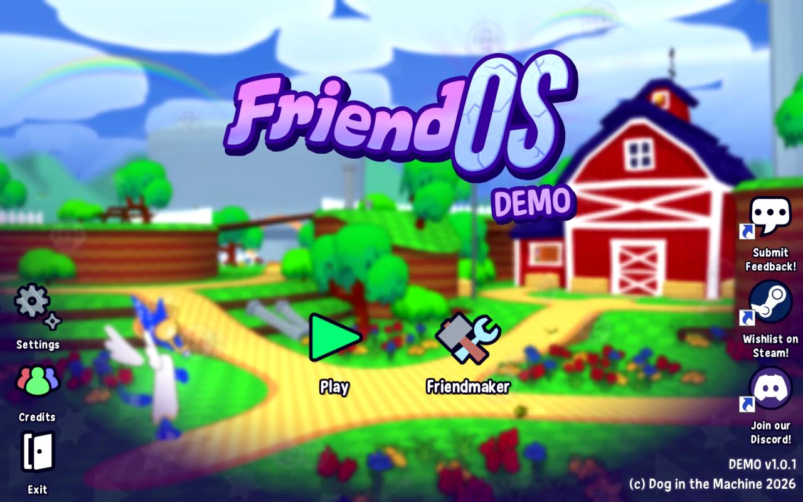
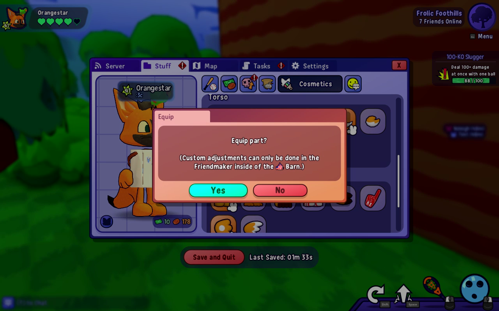
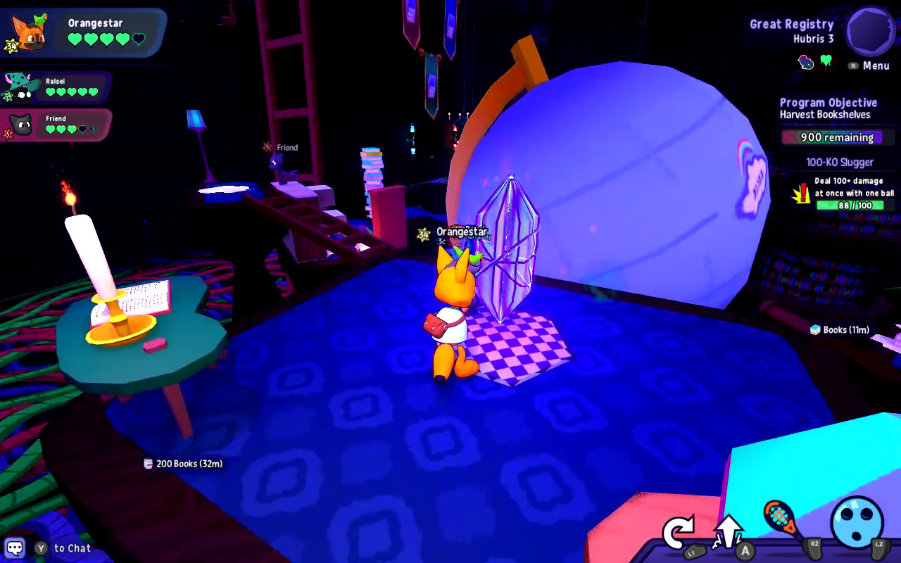

I don’t know what’s caused this game to get so popular but personally it doesn’t feel like a hit for me.
The One Paragraph Pitch
In case you didn’t know…
FriendOS is a multiplayer action RPG with the gimmick of allowing players to volley projectiles at enemies using their strike attacks. Set in a decaying early 2000s computer program, players make up teams of 3 to tackle MMO-style dungeons and raids.
The Kids Call It Frutiger Aero

I’ve never really been a fan of “computer” as an aesthetic. Firstly, it’s too generic. The computer is a device that was integral to the formative experiences of a lot of people who have recently reached adulthood. (For the next generation, this will be the Smart Phone.) As a result, lots of people are familiar with the bubbly rounded buttons and window decorations.
It’s nothing you haven’t seen before because it very specifically is trying to ape the aesthetic style of something that came before it. It doesn’t look new or interesting because it’s supposed to look like Windows XP, and thus the aesthetic has no room to grow. The whole thing as a result has a very generic mid 2000s MMO aesthetic which will be very quaint to a select few people and completely unnoticed—or worse, clunky—to the vast majority of users. It’s Toontown-y.
My second issue is that the computer as a location has no stakes. Any media that takes place inside a computer needs a narrative handwave as to why the solution to the concerning problem isn’t “simply wipe the drive and restore from backup.”
Darwinia is a good example of this done right. In Darwinia, the entire game takes place inside a 3d simulation program—a world populated by a nascent artificial intelligence project. The whole machine is too big to back up, and wiping the drive to start over would mean losing decades of neural net research. When the viruses come calling, the simulation represents them as visible monsters that the AI and the player can attack physically to clean the software.
FriendOS does not have such a good reason for being in a computer beyond nostalgia. There really is no explanation to why the player has to be the one to take on difficult tasks to fix the computer program, or even how the computer program can be fixed in the first place. It doesn’t feel like being in a computer so much as having a justification for things to not be life threatening for the players, or justification for the world to appear so incongruous with floating world warp points and bizarre geometries.

Which segues neatly into my third issue: “computer” settings never follow the rules of computers.
Computers are cold, logical things. You put the calculations in, and the machine spits the answer back out. Somehow, though, when a writer starts touching computers as a part of their setting, they turn into magic boxes that contain worlds that love to corrode like rust on a bicycle.
Thus, FriendOS almost immediately breaks out the technobabble. The world is beset by viruses (it’s always viruses!) which halt a program, and then the program “crystallizes”. Afterwards the player goes in and cleans out the viruses to reclaim the memory for the crystallized program.
You know, instead of just terminating the parent process and starving the child virus processes out.
This is doubly ridiculous in a video game. These games are made by programmers. The one profession that knows what a computer is capable of doing from start to finish.
Viruses in a “computer” setting are always a stand in for, like, goblins or slimes in an RPG. There’s no real “plot” to them, you just exterminate them.
It all makes the FriendOS story a little boring and a little hard to follow, and overall it lacks a compelling reason to want to keep playing unless you really like the gameplay. The plot feels bare-bones like an ARG horror Tumblr ask webcomic. “Something has unleashed viruses on the interwebs and only YOU can stop them!!!! Anyway let’s go to the library so you can look at my squirrel OC.”
If the Action RPG has no RPG is it just an “action”?
A concern I have for the full version of FriendOS is a lack of stats. There is no persistent statistics beyond what your gear confers, which means every weapon in the game has to have an upside and a downside.
This isn’t much of a problem for me, mister number one RPG stat hater, but it does lead to a concern about grinding. The only thing the game can award you with for completing a battle is currency (when it’s not awarding you with linear progression) and items in the shops are pretty evenly paced to the point that you need to do a fair amount of combat in order to do everything - or a fair amount of the fishing minigame. On top of that, a lack of stat increases means the grinding can never get faster - which is the traditional mechanical “reward” for persistent stat improvement in an MMORPG.
This means that in solo play every build is homogenized. Any change in weaponry is a pure sidegrade that caters to your playstyle but does not meaningfully change your proficiency. The nail bat might speed up your ability to melee opponents, but the negative penalty to ball strength ruins your ability to crowd control. The effective time and damage you do as a single player is static. Multiple players can only speed things up through efficiency, not optimization. Every single time the server announced players completing the demo dungeon, it was always under 11 minutes but never less than 10, even with difficulty modifiers on.[1] Imagine if Monster Hunter let you craft a weapon but never upgrade it, and then the monsters kept getting harder anyway. That’s what we’re dealing with.
I also never really felt hard pressed to think too hard about where I initially threw my ball. The game encourages you to start with direct hits. Your aim snaps to enemies near your cursor, and there’s even a special lob move to throw a ball over walls. However, projectile recharge rate is irredeemably low and the default projectile spends its entire payload possible on enemies. This will cause the ball to dissipate immediately if the enemy has more health than the ball does damage at its base. And even if the enemy does have low health, you are still encouraged to bounce the ball around with strikes to build up its damage before it can hit an enemy anyway, so that it can cleave and continue to hit more enemies.
What’s more, there’s always a maximum amount of additional damage you can add to the projectile by striking it before it collides with an enemy, so there’s no reason to continue to strike it for any reason other than to redirect it towards enemies. The dominant strategy is to frontload the ball with damage and plow through as many enemies as you can before the damage begins to dissipate over time.
So, rather than follow the clear design intent to throw the ball at my enemies I found it was much more fruitful to simply toss the ball at a nearby wall and then charge strike it in the direction I actually want it to go when it came back to me.
This becomes extremely frustrating to play the moment enemies have health that exceeds even your charge shot’s damage value, which happens as early as the third encounter in the game. You are punished for throwing the ball at the opponent with long cooldown times and are forced to put yourself into dangerous situations where you can button mash away the viruses. You are rewarded for hanging back and playing Squash with yourself until you dodge roll into the guy with the ball traveling at mach fuck piercing 3 enemies, replenishing your cooldown the entire time.
There’s an additional fear for me in how the game plans to elevate the difficulty. The dungeon boss has incredibly complex patterns like a bullet hell shooter, but for a three player co-op fuckabout game you can only get so complex before you start losing people. Not that complexity is bad, but ask any Borderlands gamer how difficult it can be to get a group together after multiple failures. If I want to hook up with friends and co-op a raid boss, why not play Rabbit & Steel where I can rush multiple bosses with these raid/bullet hell mechanics and get persistent stat upgrades through the run and not leave my friends in the dust due to my progression since it’s a permadeath roguelike?
You can raise enemy health, but the particularly large enemies already have formidable health bars and feel like a huge burden to take on. If player stats stay stagnant while enemy stats rapidly increase, then combat encounters increase in time, which can make later combat encounters feel “spongy”. Nobody wants a DOOM map full of Barons of Hell.
I’m all for less progressive stat increases in games over player competency checks. (Local DOOM fan likes games where weapons and encounters have predictable, static stats. More news at 11.) Plus, removing stat requirements from late game areas does mean that new players can jump right in alongside veterans who have unlocked most of the stuff in the game already and still feel like they’re making a difference while the veterans don’t feel overpowered.
Its just too much grind for not a lot of reward. Without the progressive stat increases what is there to get out of later levels in the game? the encounters already blend together.
( ò w ó) nya
This is a very furry game.
I don’t mean just for the fact that every single character is an anthropomorphic animal, but more the general “feel” of the game. There’s this cutesy “everything’s a harmless joke but there’s horror stuff but it’s ok because the horror stuff is over there out of the way” vibe that I only get from furry media. There’s so many tiny one off Tumblresque gags everywhere in this game and I have only ever attributed that level of loving chaos and non sequiturs with furries. If you remember Webfishing then you’ll get where I’m coming from.
It’s a take-it-or-leave-it kind of thing to me. You might scoff that the action RPG has a cutesy uwu dog deity telling you that he understands you don’t want violence to be the answer. You might disassociate when the raccoon tells you that he’s king of the trash. I got a few good chuckles out of intended gags in the game but a solid chunk of it definitely feels like a focus on a targeted demographic.
This level of demographic awareness comes to the benefit of the game’s overworld, however. I mentioned Webfishing before, and the comparison is almost too apt when it comes to overworld interactions with other players. The overworld is richly detailed, full of secrets, and has tons of unlockable ways to express yourself and interact with others such as outfits and emotes. It’s a great virtual shared space in the same vein as Tower Unite in that regard.
/flip, my favorite emote. It makes the music cut out when you use it.A lot of effort has been put into the “Friendmaker”, to the point that the game rewards you for making additional characters and even encourages you to make as many as possible. These don’t have stats or anything associated with them, it’s purely for having fun with friends and having preset skin combinations. What takes the cake is the accessories menu, where every addon can have it’s position, rotation, and even scale adjusted. Mark my words, this will be abused in the full game - in a good way, I mean. I’m expecting Soul Calibur tier custom characters.
If all you’re looking for is a silly little chatroom with an involved character creator and some light combat to spice up the interstitials this could be precisely the thing you’re looking for. Either that or your computer can’t run Resonite.
I’ve never wanted to play a game I don’t enjoy so badly
I keep thinking about FriendOS even after I stepped away from the game so it must be compelling somehow. Sometimes I’d boot the demo and just run around, do some of the fishing minigame, maybe join a server and just people watch to see how the other players are building their characters. But every time I thought about actually playing it my thoughts about the combat kept pushing me away. I even suckered a friend into it and we both came away with the same general opinion: “that was fun, but I don’t think I care that much to buy the full game.”
This might be one of those games I pick up and hop on when someone else tells me they’re playing it, sort of like Marvel Rivals or PEAK. I can’t imagine actually grinding this game solo.
I think it’ll really just depend on the price. $5 would be my maximum but I anticipate it being 20.
-
I saw 15 exactly once: when I went in with one fewer player than max. ↩︎